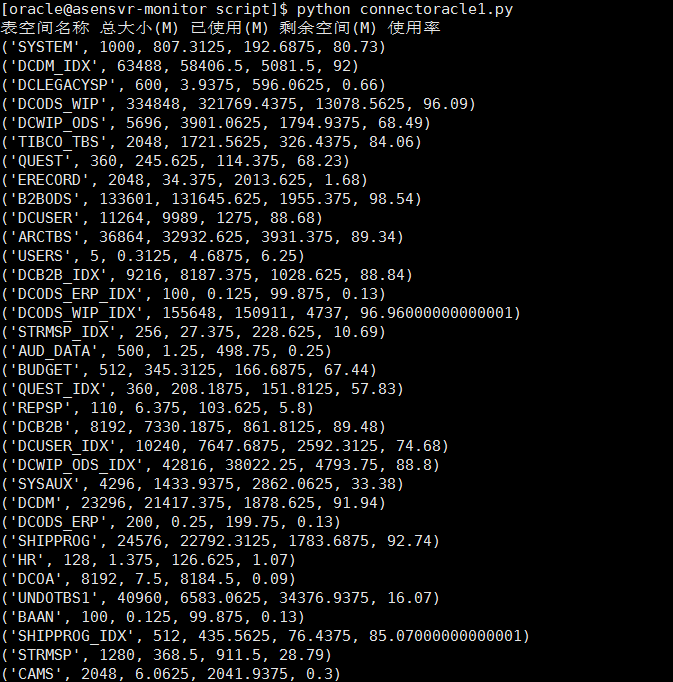
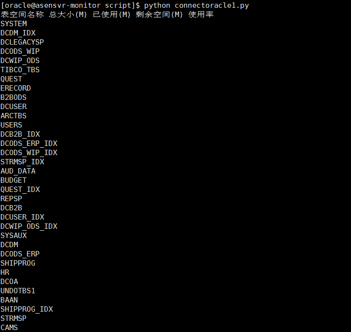

[Python运维]使用cx_Oracle连接Oracle(高级篇)
这节的内容较多，分别是:
- 使用sys用户连接Oracle数据库
- 通过函数执行SQL语句
- 通过读取文件内的内容来执行SQL语句
- 使用Python 捕获程序异常
使用cx_Oracle获取oracle表空间的使用率
我们新建一个文件，命名为tablespace.sql,该文件的内容是获取表空间的使用率:
文件路径为:/home/oracle/script/tablespace.sql
select a.tablespace_name,a.bytes/1024/ 1024 "Sum MB",(a.bytes-b.bytes)/1024 /1024 "used MB"
,b.bytes/ 1024/1024 "free MB",round(((a.bytes-b.bytes)/a.bytes)*100 ,2
) "percent_used"
from
(select tablespace_name, sum(bytes) bytes from dba_data_files group by tablespace_name) a,
(select tablespace_name, sum(bytes) bytes,max (bytes) largest from dba_free_space
group by tablespace_name) b
where a.tablespace_name=b.tablespace_name
接下来我们上代码
#!/usr/bin/python
#coding=utf8
import cx_Oracle
def oraclesql(cursor):
#这里我们使用python的open方法打开文件并读取文件内容作为SQL语句执行
#可使用绝对路径或相对路径
fp=open('/home/oracle/script/tablespace.sql','r')
#fp=open('./tablespace.sql','r')
fp1=fp.read()
cursor.execute(fp1)
data=cursor.fetchall()
return data
if __name__=="__main__":
ipaddress='10.65.1.120'
username='sys'
password='sys_password'
port='1521'
tnsname='dctest'
#这里我们利用Python的异常处理来捕获异常，具体用法请参考文章开始提到的教程
try:
#这里我们使用sysdba权限连接oracle数据库(和上期连接普通用户的不同)
db = cx_Oracle.connect(username+'/'+password+'@'+ipaddress+':'+port+'/'+tnsname ,mode=cx_Oracle.SYSDBA)
except Exception as e:
content= (tnsname+' is Unreachable,The reason is '+ str(e)).strip()
print (content)
else:
cursor = db.cursor()
data=oraclesql(cursor)
cursor.close()
db.close()
#由于上面获取的是一个列表(多行)，这里使用for循环来遍历
#注意i也是一个列表
print ('表空间名称 总大小(M) 已使用(M) 剩余空间(M) 使用率')
for i in data:
print (i)
运行结果
首先我们测试下正确的输出结构 
可以看到已经获取到了各个表空间的名称
异常处理测试
然后我们故意输入给出错误的连接条件看是否可以捕获异常
我们分别输错密码和tns名称
[oracle@asensvr-monitor script]$ python connectoracle1.py
dctest is Unreachable,The reason is ORA-01017: invalid username/password; logon denied
[oracle@asensvr-monitor script]$ python connectoracle1.py
d1ctest is Unreachable,The reason is ORA-12514: TNS:listener does not currently know of service requested in connect descriptor
可以看出已经捕获成功
获取感兴趣的列
我们是利用fetchall方法来获取数据的，返回的是一个列表(list)，我们可以使用i[0]的方式只取感兴趣的列，如下图我们只获取表空间的名称
只需将代码最后一行改成:print (i[0])

至此cx_Oracle模块连接oracle(高级篇)已经讲完，下期介绍一些实用的日常运维方面的命令。
后续会讲述如何将得到的数据存入MySQL数据库供日后分析